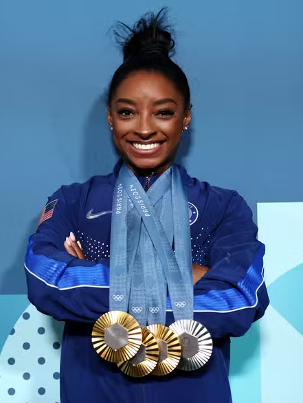

Lionel Messi
Jogador de Futebol
Lionel Messi, nascido em 24 de junho de 1987, é um dos
maiores
jogadores de futebol de todos os tempos. Argentino, ele brilhou no Barcelona, PSG e Inter Miami. Com
oito Bolas de Ouro e uma Copa do Mundo, ele é conhecido por sua habilidade técnica e gols
impressionantes.
Ivete Sangalo
Cantora e Compositora
Ivete Sangalo é uma das maiores cantoras e compositoras do
Brasil,
conhecida por sua voz poderosa e presença de palco contagiante. Com mais de 25 anos de carreira, ela
se destaca no axé e na música pop brasileira, acumulando inúmeros prêmios e uma legião de fãs.

Eminem
Rapper e Compositor
Eminem, nome artístico de Marshall Bruce Mathers III, é um
rapper,
compositor e produtor musical norte-americano. Conhecido por suas letras intensas e técnicas de rima
impressionantes. Eminem é amplamente considerado um dos maiores rappers de todos
os tempos, vencedor de vários prêmios Grammy e um Oscar por sua música "Lose Yourself".

Simone Biles
Ginasta
Simone Biles é uma ginasta norte-americana considerada uma
das melhores de todos os tempos. Nascida em 14 de março de 1997, ela se destacou por suas incríveis
habilidades e força. Biles é a ginasta mais condecorada da história, com várias medalhas olímpicas e
mundiais, incluindo sete ouros olímpicos.